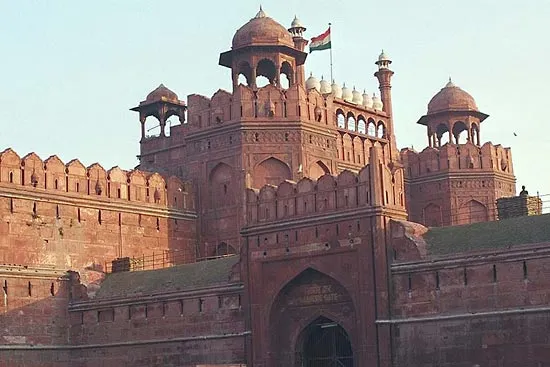

The Red Fort
The Red Fort, also known as Lal Qila (Hindustani: [laːl qiːlaː]) is a historic fort in Delhi, India, that historically served as the main residence of the Mughal emperors. Emperor Shah Jahan commissioned construction of the Red Fort on 12 May 1639, when he decided to shift his capital from Agra to Delhi. Originally red and white, its design is credited to architect Ustad Ahmad Lahori, who also constructed the Taj Mahal. The fort represents a high point in the Mughal architecture under Shah Jahan and combines Persian palace architecture with indigenous Indian traditions.
The fort was plundered of its artwork and jewels during Nadir Shah's invasion of the Mughal Empire in 1739. Most of the fort's marble structures were subsequently demolished by the British following the Indian Rebellion of 1857. The fort's defensive walls were largely undamaged, and the fortress was subsequently used as a garrison.